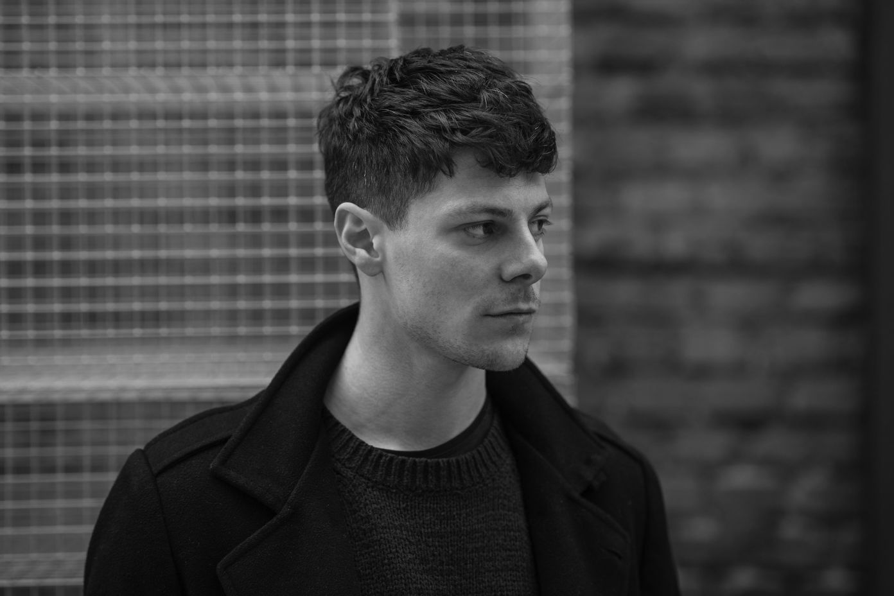

Kunstenaar Edoardo Tresoldi

Hij onderzoekt de poëtica van de dialoog tussen
mens en landschap door de taal van de architectuur te gebruiken als een expressief instrument
en een sleutel tot de interpretatie van ruimte.
De Italiaanse kunstenaar speelt met de transparantie van mesh en met industriële materialen
om de tijd-ruimte-dimensie te overstijgen en
vertelt een dialoog tussen kunst en wereld, een
visuele samenvatting die zich openbaart in het vervagen van fysieke beperkingen. Zijn concept
van sculptuur komt voort uit de wens om de
dialoog te vertellen die tot stand komt tussen
een figuur en de omringende ruimte, mogelijk
gemaakt door het creëren van een empathische
relatie tussen de kijker en het werk.